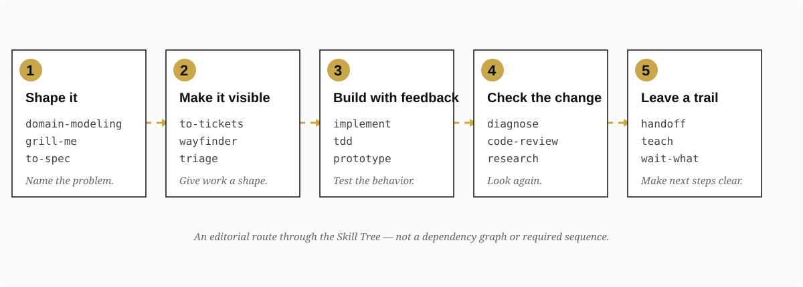

From Question to Code: Matt Pocock's Skill Curation
Start with the moment you are in
A request arrives half-formed. The codebase is unfamiliar. The plan is too large to hold in one context window. A test fails, but the failure is not yet a diagnosis. A review needs to answer two different questions: does the change meet the project's standards, and does it solve the problem that was actually asked?
Matt Pocock's curated Skill Tree is useful because it meets those moments directly. It is not just a list of names. It is a set of handholds for turning uncertainty into work another person—or another agent—can inspect.
| If you are facing… | Start with… | The useful output is… |
|---|---|---|
| A vague request | domain-modeling and grill-me | Shared language and challenged assumptions |
| A plan that is still too abstract | to-spec and to-tickets | A written requirement and independently workable slices |
| A change that must be built carefully | implement, tdd, and prototype | Behavior-first implementation with a feedback loop |
| A failure with no reliable explanation | diagnose or diagnosing-bugs | Hypotheses, instrumentation, and a regression path |
| A change that needs an independent look | code-review | A review against both standards and the originating request |
| Work that must survive a context handoff | handoff, teach, or wait-what | A compact continuation brief and clearer next steps |
The route through the work
The sequence below is an editorial reading path, not a required dependency graph. It shows what the curation feels like when read from the user's point of view: start with meaning, make the work concrete, build, check, and leave a trail.

Figure 2. An editorial route through the Skill Tree—not a dependency graph or required sequence.| Stage | Representative skills | Reader-facing question |
|---|---|---|
| Shape it | domain-modeling, grill-me, to-spec | What are we really trying to do? |
| Make it visible | to-tickets, wayfinder, triage | What is the next independently useful slice? |
| Build with feedback | implement, tdd, prototype | What behavior can we prove as we go? |
| Check the change | diagnose, code-review, research | What did we miss, and what does the evidence say? |
| Leave a trail | handoff, teach, wait-what | Can the next person continue without starting over? |
How the curation is organized
The main Matt Pocock collection connects 25 records directly. That number is a count of links in the published collection, not a claim that every link is a unique leaf: three of the links are groupings that organize the work below them. A separate utility collection keeps repository safety and setup skills together.
The chart above is interactive on the published report. Hover a bar to see the direct-link count; the table is the no-script fallback.
| Published collection | Stars | Overall grade | Direct links |
|---|---|---|---|
| Matt Pocock Skills | 5★ | S | 25 |
| Engineering | 4★ | A | 14 |
| Productivity | 3★ | A | 6 |
| Personal | 3★ | B | 2 |
| Misc | 3★ | A | 4 |
Engineering holds the planning, implementation, debugging, and review path. Productivity holds the skills that keep the work understandable across people and sessions. Personal keeps article editing and knowledge work visible without presenting them as engineering steps. Misc gathers guardrails, test-fixture migration, exercise scaffolding, and pre-commit setup—the small pieces that make a repository easier to work in tomorrow than it was today.
Choose by the job, not by the label
The Skill Tree is most useful when it answers “what should I reach for now?” before it asks the reader to learn the taxonomy.
| You need to… | Try… | Published standing |
|---|---|---|
| Stress-test a decision | grill-me | 3★ · B |
| Turn context into a product requirement | to-spec (To PRD) | 3★ · B |
| Break a plan into demonstrable work | to-tickets | 3★ · A |
| Implement against an agreed plan | implement | 2★ · C |
| Work test-first | tdd | 3★ · B |
| Diagnose a hard failure | diagnose | 3★ · A |
| Review a branch against its intent | code-review | 2★ · C |
| Carry context to another agent | handoff | 3★ · B |
| Make repository defaults safer | git-guardrails-claude-code or setup-pre-commit | 2★ · C |
The labels are signals about maturity and evidence, not a promise that one skill is correct for every project. A 2★ skill can be the right tool for a narrow job. A 5★ collection can still contain leaves with different levels of corroboration.
What the trust signals mean
The capstone's 5★ / S standing describes the combined collection. It is supported by more than one kind of public signal: the source repository, an academic paper, a public demonstration, and peer review. That is stronger than a popularity number alone, but it is not evidence that every individual leaf has the same reach or validation.
The Skill Tree currently preserves 40 Matt-attributed records. The ordinary public Skill Tree exposes 39 of them because one historical 1★ record is kept out of the normal installation view. The remaining visible records range from 2★ named implementations through the 5★ collection, with the strongest individual paths concentrated around planning, debugging, domain language, personal knowledge work, and vertical-slice delivery.
Several recently surfaced entries—including code-review, research, wayfinder, wizard, to-questionnaire, and wait-what—are source-backed first-party implementations at 2★ / C. That confirms what the records are and where they come from. It does not claim independent usage results, benchmark performance, or equal validation across the Skill Tree.
Stars and trust grades answer related but different questions. Stars describe a skill's place in Gaia's maturity ladder. The overall grade describes the strength of the evidence assembled around that record or collection. Gaia's current public projection and its underlying Trust Magnitude calculation have a small discrepancy for the capstone and Engineering collection, so this report intentionally uses the stable star and grade labels rather than presenting conflicting decimal values. The curation itself remains published while that value is reconciled.
Current paths and preserved history
Curation has to preserve useful history without confusing it with a current installation recommendation. The Matt Pocock Skill Tree contains names that changed shape or status upstream, including diagnose, ubiquitous-language, write-a-skill, and zoom-out. It also preserves personal-work records that are useful for understanding the collection but are not presented as general engineering utilities.
That distinction helps a reader make a safe choice:
- Use the current source link when you want to install or inspect a skill.
- Treat historical or explicitly non-installable records as context, not as a promise of a working install path.
- Read the collection summary as a view of the whole curation, not as a replacement for the individual skill page.
For the full source, start at Matt Pocock's public skills repository. For the Gaia view, browse the Matt Pocock Skill Tree, then open the specific skill that matches the work in front of you.
The useful conclusion
The strongest way to read this curation is as a disciplined loop:
1. Name the problem. 2. Challenge the decision. 3. Write the requirement. 4. Slice the work. 5. Implement against behavior. 6. Diagnose and review what changed. 7. Leave enough context for someone else to continue.
Matt Pocock's collection gives each transition a concrete starting point. Gaia's curation adds the map around those starting points: how the records group together, what evidence supports the collection, where the leaves differ, and which names belong to the Skill Tree's history.